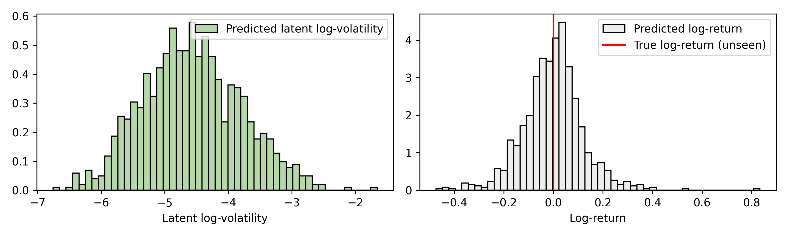

Online Filtering and Prediction
A key feature of inference in state-space models is that estimates can be updated
online as new data arrives. In this example, we'll use cuthbert to infer the
volatility of the Marks & Spencer stock price data and then use it to predict
a future volatility and stock price before updating the approximation with new data.
The model we'll use is a simple stochastic volatility model adapted from section 2.4.3 in Chopin and Papaspiliopoulos (2023).
Of additional interest, we'll define the state-space model dynamics in continuous-time so that we easily handle the irregular observation times (which occur here as stock prices aren't available on weekends). We'll also define the observation model in a convenient way to handle missing data and predict future values using the same filtering framework.
Setup and imports
from typing import NamedTuple
import matplotlib.pyplot as plt
import pandas as pd
from jax import Array, random, numpy as jnp, tree, nn
from jax.scipy.stats import norm
import numpy as np
import yfinance as yf
from cuthbert import filter
from cuthbert.smc import particle_filter
from cuthbertlib.resampling import adaptive, systematic
We'll use a simple bootstrap particle filter for inference since our model is non-linear, non-Gaussian and low-dimensional (so we don't need to worry about the particle filter curse of dimensionality).
Load data
We can use the yfinance library to easily
download the Marks & Spencer stock price data for the past 3 years.
Code to download Marks & Spencer stock price data
def download_stock_data(
ticker: str, start_date: str | None = None, end_date: str | None = None
) -> pd.DataFrame:
if end_date is None:
end_date = pd.Timestamp.today().strftime("%Y-%m-%d")
if start_date is None:
# end_date - 3 years
start_date = str(pd.Timestamp(end_date) - pd.Timedelta(days=365 * 3))[:10]
stock = yf.Ticker(ticker)
data = stock.history(start=start_date, end=end_date)
# Calculate log returns
data["log_return"] = np.log(data["Close"] / data["Close"].shift(1))
# Remove first row (NaN log return)
data = data.iloc[1:].reset_index()
# Convert dates to days since first observation
origin_date = data["Date"].iloc[0]
data["days_since_origin"] = (data["Date"] - origin_date).dt.days
return data
Model inputs for cuthbert
We'll now extract the data we require for inference, this will be the current and previous timestamps (we'll just use daily frequency data here) as well as the log return of the stock price.
The data will be stored as jax arrays in a convenient NamedTuple.
# Create model inputs
class ObservationData(NamedTuple):
time: Array # Current observation time (days since origin)
time_prev: Array # Previous observation time (days since origin)
log_return: Array # Log return Y_t = log(price_t / price_{t-1})
times = jnp.array(data["days_since_origin"].values)
log_returns = jnp.array(data["log_return"].values)
# Add dummy values to the start of the data
# (no observation for init_prepare)
times = jnp.concatenate([jnp.array([0]), times])
log_returns = jnp.concatenate([jnp.array([jnp.nan]), log_returns])
times_prev = jnp.concatenate([jnp.array([0]), times[:-1]])
obs_data = ObservationData(
time=times,
time_prev=times_prev,
log_return=log_returns,
)
previous_data = tree.map(lambda x: x[:-1], obs_data)
new_data = tree.map(lambda x: x[-1], obs_data)
We've also (synthetically) split the data into previous and new data to mimic an online inference setting.
Stochastic volatility model
The model we'll use is a simple stochastic volatility model from section 2.4.3 in Chopin and Papaspiliopoulos (2023) but adapt the dynamics to be defined in continuous-time so that we can handle irregular observation times.
The continuous-time dynamics represent an Ornstein-Uhlenbeck process, which is a mean-reverting stochastic process. It can be solved exactly giving
We'll set the hyperparameters of the model without thinking too much, in practice you'd probably want to learn these from the data too!
mu = 0.0 # Mean log-volatility (to revert to)
theta = -jnp.log(0.95) # Persistence (close to 1 for volatility clustering)
sigma = 0.3 # Volatility of volatility
init_mean = 0.0 # Initial mean
init_std = 1.0 # Initial stds
Then we'll convert our mathematical model into one that cuthbert.smc.particle_filter
can understand.
def init_sample(key: Array, model_inputs: ObservationData) -> Array:
return init_mean + init_std * random.normal(key, ())
def propagate_sample(key: Array, state: Array, model_inputs: ObservationData) -> Array:
dt = model_inputs.time - model_inputs.time_prev
mean = mu + (state - mu) * jnp.exp(-theta * dt)
var = (sigma**2) * (1 - jnp.exp(-2 * theta * dt)) / (2 * theta)
std = jnp.sqrt(var)
return mean + std * random.normal(key, ())
def log_potential(
state_prev: Array, state: Array, model_inputs: ObservationData
) -> Array:
# Check if observation is missing (NaN)
is_missing = jnp.isnan(model_inputs.log_return)
# Log likelihood: log p(Y_t | X_t) = log N(Y_t; 0, exp(X_t))
log_vol = state
vol = jnp.exp(0.5 * log_vol) # exp(X_t/2) = sqrt(exp(X_t))
log_pot = norm.logpdf(model_inputs.log_return, 0.0, vol)
# Missing observation = uniform potential => filter just propagates
return jnp.where(is_missing, 0.0, log_pot)
It's important to note here how we've handled nan values in the log-return data.
When we encounter a nan value, we set the log-potential to 0 which means tell the
particle filter there is no information in the likelihood for that time step. This
allows us to do prediction as filtering with missing data.
Setup the particle filter
Now we'll get cuthbert involved! We'll choose a number of particles and a threshold
on how often to resample before constructing the filter object.
n_particles = 1000
resampling = adaptive.ess_decorator(
systematic.resampling, 0.5
) # Resample when ESS drops below 50%
pf = particle_filter.build_filter(
init_sample=init_sample,
propagate_sample=propagate_sample,
log_potential=log_potential,
n_filter_particles=n_particles,
resampling_fn=systematic.resampling,
)
We'll then use the cuthbert.filter offline filtering function to run on the previous
data.
key, previous_key = random.split(random.key(0))
previous_states = filter(pf, previous_data, key=key)
filter_state = tree.map(lambda x: x[-1], previous_states)
The last line simply extracts the final temporal state. Now we are mimicking an online inference setting where we have a previous filter state and we want to predict the next time point.
Online prediction
We'll now propagate the approximation forward to the next time point and probabilistically predict the log-volatility and log-return.
predict_model_inputs = ObservationData(
time=new_data.time,
time_prev=new_data.time_prev,
log_return=jnp.array(jnp.nan), # nan indicates missing observation, so filter->predict
)
key, predict_key, predict_ys_key = random.split(key, 3)
predict_state = pf.filter_combine(
filter_state, pf.filter_prepare(predict_model_inputs, key=predict_key)
)
predict_weights = jnp.exp(
predict_state.log_weights - nn.logsumexp(predict_state.log_weights)
)
predict_ys = jnp.exp(predict_state.particles / 2) * random.normal(
predict_ys_key, (n_particles,)
)
Now we'll plot the distributions over our predicted values.
Code to plot the predicted distributions.
fig, axs = plt.subplots(1, 2, figsize=(10, 3))
axs[0].hist(
predict_state.particles,
bins=50,
density=True,
weights=predict_weights,
label="Predicted latent log-volatility",
color="#b6d7a8",
edgecolor="black",
)
axs[0].set_xlabel("Latent log-volatility")
axs[0].legend()
axs[1].hist(
predict_ys,
bins=50,
density=True,
weights=predict_weights,
label="Predicted log-return",
color="#eeeeee",
edgecolor="black",
)
axs[1].axvline(new_data.log_return, color="red", label="True log-return (unseen)")
axs[1].set_xlabel("Log-return")
axs[1].legend()
fig.tight_layout()
fig.savefig("docs/assets/online_stoch_vol_predict.png", dpi=300)

We've also highlighted for reference the true log-return (which is unseen) in red, which the particle filter has not seen (yet).
Online filtering
Now we'll update the approximation with the new data.
key, filter_key = random.split(key)
new_filter_state = pf.filter_combine(
filter_state, pf.filter_prepare(new_data, key=filter_key)
)
new_filter_weights = jnp.exp(
new_filter_state.log_weights - nn.logsumexp(new_filter_state.log_weights)
)
jnp.nan.
Code to plot the filtered distribution.
fig, ax = plt.subplots(figsize=(5, 3))
ax.hist(
new_filter_state.particles,
bins=50,
density=True,
weights=new_filter_weights,
label="Filtered latent log-volatility",
color="#b6d7a8",
edgecolor="black",
)
ax.set_xlabel("Latent log-volatility")
ax.legend()
fig.tight_layout()
fig.savefig("docs/assets/online_stoch_vol_filter.png", dpi=300)

Key Takeaways
- We can use
cuthbertto perform online filtering and prediction in a state-space model. - We can handle irregular observation times by defining the model dynamics in continuous-time.
- We can handle missing data in the observation model by setting the log-potential to 0.
- Missing data also allows us to do prediction within the same filtering framework.
Next Steps
- Smoothing: Use
cuthbert.smootherto perform backward smoothing for more accurate historical state estimates. - Parameter learning: Learn the hyperparameters from the data using gradient descent, expectation maximization (see the parameter estimation example), or Bayesian sampling.
- More examples: Explore other examples including Kalman filtering and temporal parallelization.